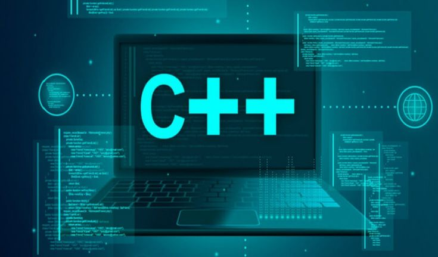

I. CƠ HỘI VIỆC LÀM TRONG NGÀNH AN NINH MẠNG
Trong bối cảnh chuyển đổi số diễn ra mạnh mẽ, hầu hết các tổ chức đều phụ thuộc vào hệ thống mạng và dữ liệu. Điều này kéo theo một thực tế: nguy cơ tấn công mạng ngày càng gia tăng, khiến nhu cầu nhân lực An ninh mạng luôn ở mức cao và ổn định.
"Khi hệ thống bị tấn công, dữ liệu khách hàng bị đe dọa, ai sẽ là người chịu trách nhiệm bảo vệ? Câu trả lời chính là đội ngũ chuyên gia An ninh mạng."
Các lĩnh vực và môi trường làm việc
Sinh viên tốt nghiệp ngành An ninh mạng có thể làm việc tại:
- Doanh nghiệp công nghệ, công ty phần mềm.
- Ngân hàng, tổ chức tài chính.
- Tập đoàn lớn, doanh nghiệp đa quốc gia.
- Cơ quan nhà nước, tổ chức hạ tầng quan trọng.
Ngành không giới hạn ở một môi trường cố định mà hiện diện ở hầu hết mọi lĩnh vực có sử dụng hệ thống CNTT.
🔹 Chuyên viên Kiểm thử xâm nhập (Pentester)
💬 Bạn có thích cảm giác “thử phá” hệ thống để tìm ra điểm yếu trước kẻ xấu không?
Công việc chính: Mô phỏng các cuộc tấn công mạng có kiểm soát nhằm phát hiện lỗ hổng bảo mật trong hệ thống, ứng dụng hoặc mạng nội bộ.
Giá trị mang lại: Giúp tổ chức nhận diện điểm yếu sớm, từ đó khắc phục trước khi bị hacker thật sự khai thác.
Vai trò cốt lõi: Phòng ngừa rủi ro bằng cách “tấn công để bảo vệ”.
🔹 Chuyên viên Vận hành An ninh (SOC Analyst)
💬 Ai là người trực tiếp phát hiện dấu hiệu tấn công đầu tiên?
Công việc chính: Giám sát hệ thống liên tục, phân tích log, cảnh báo an ninh và phản ứng nhanh khi xảy ra sự cố.
Giá trị mang lại: Giảm thiểu thiệt hại khi có tấn công, đảm bảo hệ thống được bảo vệ 24/7.
Vai trò cốt lõi: Là tuyến phòng thủ đầu tiên của tổ chức.
🔹 Kỹ sư An ninh mạng (Security Engineer)
💬 Nếu không có hệ thống bảo mật ngay từ đầu, liệu có thể an toàn lâu dài?
Công việc chính: Thiết kế, triển khai và vận hành các giải pháp bảo mật như tường lửa, hệ thống phát hiện xâm nhập, bảo mật mạng và ứng dụng.
Giá trị mang lại: Xây dựng nền tảng an toàn bền vững cho toàn bộ hệ thống CNTT.
Vai trò cốt lõi: Chủ động bảo vệ thay vì chỉ phản ứng khi sự cố xảy ra.
🔹 Chuyên gia Quản trị rủi ro & Tuân thủ (GRC)
💬 Bảo mật có chỉ là vấn đề kỹ thuật?
Công việc chính: Xây dựng chính sách an toàn thông tin, đánh giá rủi ro và đảm bảo hệ thống tuân thủ các tiêu chuẩn, quy định bảo mật.
Giá trị mang lại: Giúp tổ chức vận hành an toàn, đúng quy định pháp luật và tiêu chuẩn quốc tế.
Vai trò cốt lõi: Kết nối giữa kỹ thuật, quản lý và chiến lược tổ chức.
II. PHẨM CHẤT & KHẢ NĂNG CẦN CÓ TRONG NGÀNH AN NINH MẠNG
An ninh mạng đòi hỏi tư duy và phẩm chất đặc thù. Vậy điều gì làm nên một người làm An ninh mạng hiệu quả?
Năng lực chuyên môn
- Kiến thức mạng máy tính: Hiểu cách dữ liệu di chuyển và các giao thức hoạt động.
- Hệ điều hành: Làm chủ Linux và Windows – nơi diễn ra phần lớn hoạt động tấn công/phòng thủ.
- Lập trình & scripting: Hỗ trợ phân tích, tự động hóa và xử lý sự cố.
- Kiến thức bảo mật hệ thống & cloud: Đáp ứng xu hướng điện toán đám mây hiện đại.

Phẩm chất cá nhân (Yếu tố quyết định đi xa)
- Tư duy logic và phản biện: Luôn đặt câu hỏi “vì sao”.
- Tinh thần tự học: Cập nhật liên tục vì công nghệ thay đổi rất nhanh.
- Khả năng chịu áp lực: Xử lý chính xác khi sự cố khẩn cấp xảy ra.
- Kỹ năng giao tiếp: Giải thích rủi ro kỹ thuật cho người không chuyên.
- Đạo đức nghề nghiệp: Trung thực và trách nhiệm cao với dữ liệu quan trọng.
BẠN CÓ SẴN SÀNG TRỞ THÀNH NGƯỜI BẢO VỆ HỆ THỐNG?
Hãy bắt đầu hành trình chinh phục không gian mạng ngay hôm nay!